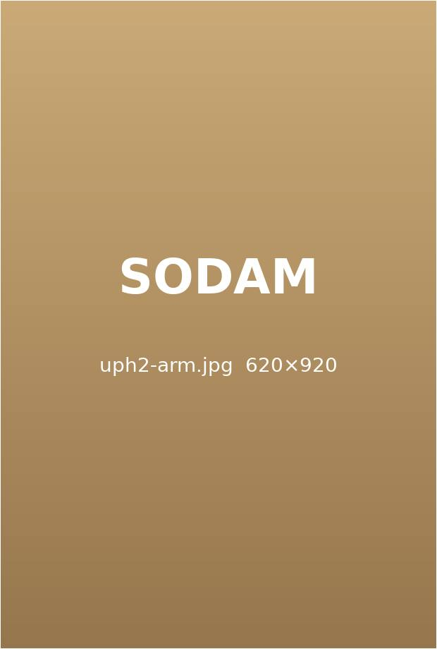
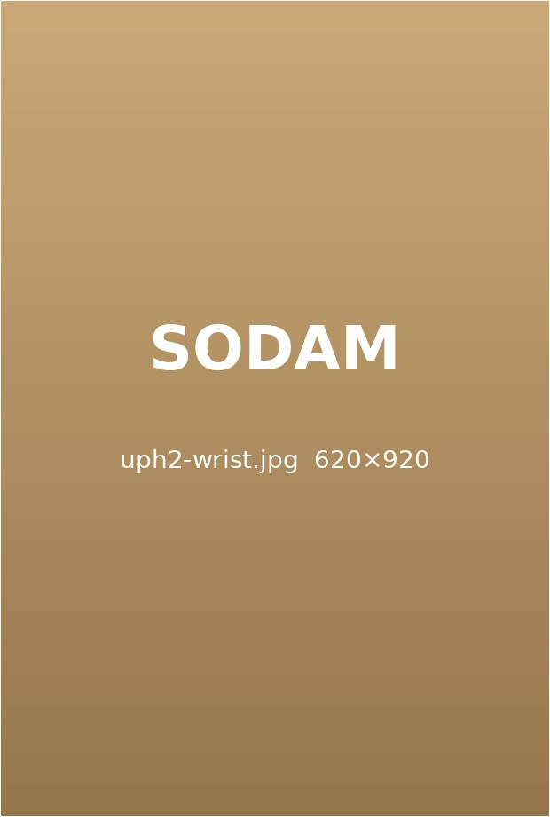
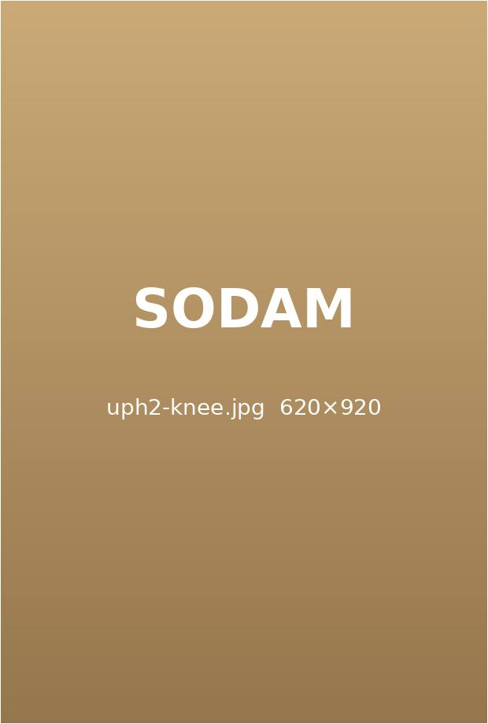
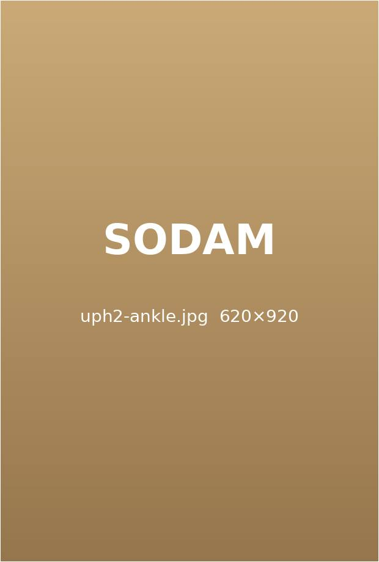
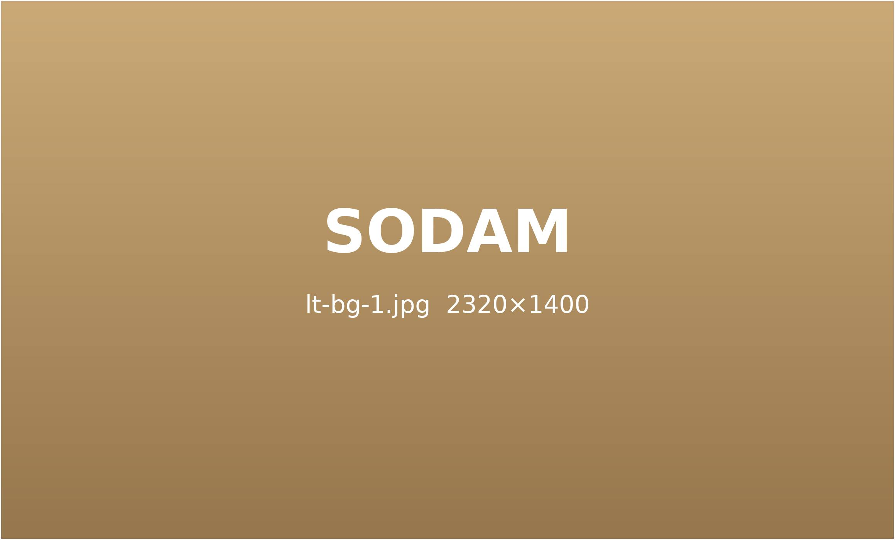
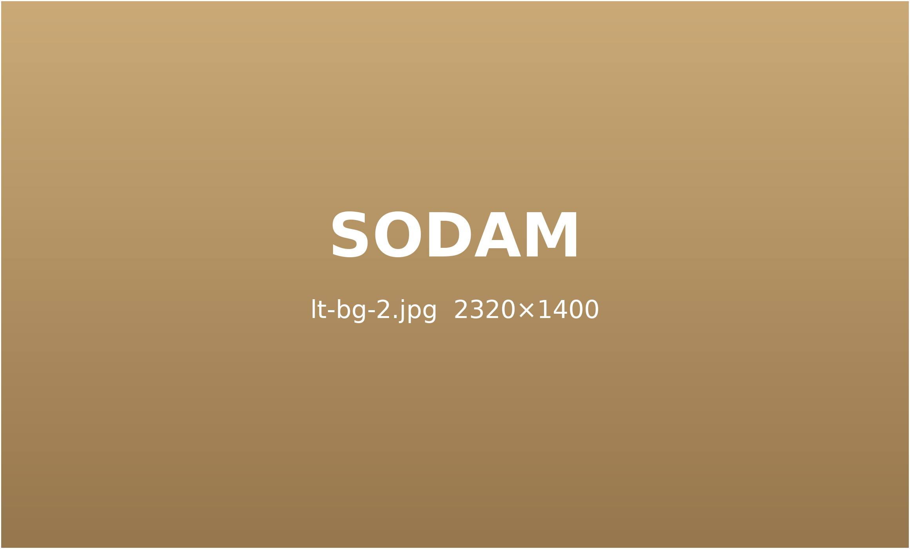
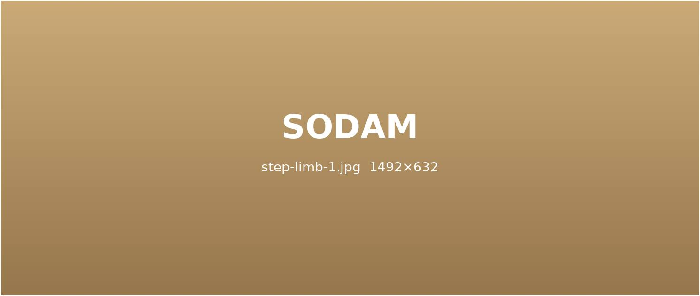
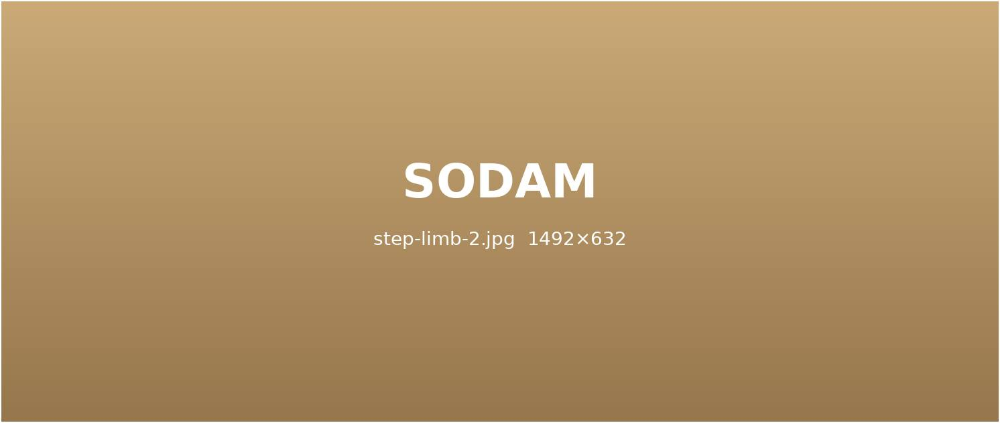
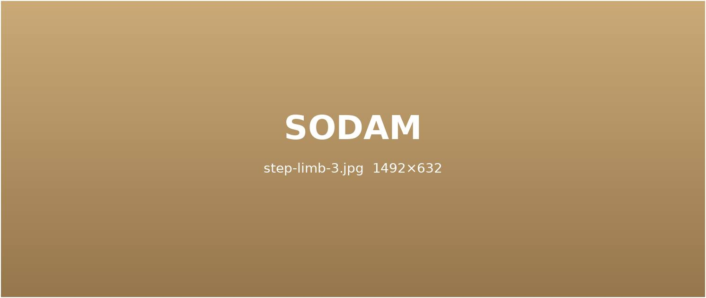

부위마다 다른 원인,
정밀하게 찾아 치료합니다.
반복된 동작, 오래된 부상, 약해진 근력 — 관절 통증은 원인에 따라 치료가 달라집니다.
소담은 아픈 부위와 연결된 근육 · 힘줄까지 함께 살핍니다.
부위마다 다른 원인,
쓰임새를 먼저 봅니다.
같은 손목 통증도 어떤 일을 하며 어떻게 써 왔는지에 따라 치료가 달라집니다.

팔 · 팔꿈치
반복해서 쥐고 비트는 동작이 힘줄에 쌓여 통증이 됩니다.
- 테니스 엘보
- 골프 엘보
- 팔꿈치 힘줄염
- 팔 저림

손목 · 손
키보드 · 마우스 · 육아처럼 손목을 계속 쓰는 일이 원인입니다.
- 손목 터널 증후군
- 방아쇠 손가락
- 드퀘르뱅 건초염
- 손목 결절종

무릎 · 다리
체중을 받는 관절이라 연골과 인대에 부담이 쌓이기 쉽습니다.
- 퇴행성 관절염
- 연골 연화증
- 반월상 연골 손상
- 인대 손상

발목 · 발
삐끗한 뒤 제대로 회복하지 못하면 불안정성이 오래 남습니다.
- 발목 염좌
- 족저근막염
- 아킬레스건염
- 발목 불안정증
부위별 주요 질환
탭을 눌러 팔 · 손목과 다리 · 발목 질환을 확인해 보세요.

테니스 엘보01
팔꿈치 바깥쪽 힘줄에 반복 부담이 쌓인 상태입니다.
- 물건을 쥘 때 통증
- 팔꿈치 바깥 압통
골프 엘보02
팔꿈치 안쪽 힘줄에 생기는 염증입니다.
- 손목을 굽힐 때 통증
- 팔 안쪽 당김
손목 터널 증후군03
손목 안 신경이 눌려 손끝이 저립니다.
- 밤에 저림 심함
- 엄지 · 검지 감각 저하
방아쇠 손가락04
손가락 힘줄이 걸려 딸깍 소리가 납니다.
- 아침 강직
- 손가락 걸림
드퀘르뱅 건초염05
엄지 쪽 손목 힘줄이 붓고 아픈 상태입니다.
- 엄지 움직일 때 통증
- 손목 부기

퇴행성 무릎 관절염01
연골이 닳아 계단 · 쪼그려 앉기가 힘들어집니다.
- 계단 오를 때 통증
- 무릎 붓기
- 아침 뻣뻣함
- 소리가 남
발목 염좌 · 불안정증02
인대가 늘어나 발목이 자주 꺾입니다.
- 자주 삐끗함
- 바깥 복사뼈 통증
- 붓기 반복
- 걷기 불안
족저근막염03
발바닥 근막에 염증이 생겨 첫걸음이 아픕니다.
- 아침 첫발 통증
- 뒤꿈치 압통
- 오래 서면 악화
- 발바닥 당김
아킬레스건염04
발뒤꿈치 힘줄이 붓고 뻣뻣해집니다.
- 뒤꿈치 위 통증
- 까치발 어려움
- 운동 후 악화
- 힘줄 두꺼워짐
정확한 진단이
치료의 방향을 정합니다.
한의학적 종합 진단
맥진 · 설진 · 문진으로 기혈의 흐름과 장부 상태를 살핍니다.
체질과 생활 습관까지 함께 보고 치료 방향을 잡습니다.
STEP 1.

정밀 검사
초음파 · 체형 분석 · 자율신경 검사로 통증 부위를 여러 방향에서 확인합니다.
필요하면 영상의학과 검사를 연계해 판독합니다.
STEP 2.

맞춤 치료 · 재발 관리
검사 결과에 맞춰 치료를 조합하고, 회복 단계마다 다시 평가합니다.
통증이 줄어든 뒤에는 자세 · 운동 습관까지 함께 관리합니다.
STEP 3.
